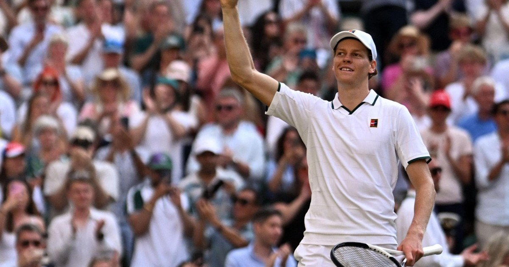

Jannik Sinner underwent knee surgery Tuesday — and the Australian Open comeback he was targeting is now in doubt
Jannik Sinner confirmed Tuesday he had minor surgery on his right knee after months of rehab failed — a procedure that likely rules him out of the Australian Open in January, the tournament he had circled for his comeback.

Disclosure: this post contains affiliate links. I earn a commission on qualifying purchases.
The surgery
Jannik Sinner confirmed Tuesday that he has undergone surgery on his right knee, extending an absence from tennis that has already lasted more than four months.
"Over the past few months, together with my team we've tried everything to treat my injury without surgery," Sinner wrote in a statement shared on social media. "After some very encouraging progress early on, my knee unfortunately didn't respond as we'd all hoped, that's why today I underwent a minor surgery to improve the condition of my iliotibial band."
The procedure was performed in Turku, Finland, by orthopaedic surgeon Lasse Lempainen, and involved lengthening the iliotibial band — the strip of connective tissue that runs along the outside of the thigh to the knee.
Sinner is the world No. 2 and a five-time Grand Slam champion. He has not played a competitive match since July 12, when he beat Alexander Zverev to retain his Wimbledon title.
The timeline
The recovery is estimated at around three months, according to The Athletic, with one knee specialist telling Sky Sport it could stretch to four. Either way, the math is brutal: the Australian Open main draw begins on January 17, and Sinner is a two-time champion in Melbourne.
That makes him unlikely to feature at the first Grand Slam of 2027 — and rules him out of the February hard-court events as well, with a return to full training pencilled in before Indian Wells in March, where he is the defending champion.
The turn is sharp because the comeback had a date. As recently as November 10, speaking in Milan, Sinner said he hoped to be back in Melbourne, and to play a few tournaments beforehand. Two weeks later, he was on an operating table instead.
The months that led here
This was not a sudden decision. Sinner has been managing inflammation of the iliotibial band for months, trying conservative rehabilitation first. As late as October, a spokesperson for him said he had not undergone surgery and was not planning to do so at that time.
The knee has barely let him move, by his own recent admission. "The worst part for me about this injury is that I cannot compete, I cannot play tennis," he said.
The layoff has already cost him plenty. During his absence he lost the world No. 1 ranking to Zverev, the man he beat in the Wimbledon final. He also had his tonsils removed during the time away and has been rebuilding muscle after losing a significant amount of weight.
"I really miss being on court and will now begin my recovery process together with my team," Sinner wrote. "Thank you for all your support. See you soon!"
What it means
Melbourne was supposed to be the comeback story — the two-time champion returning to the tournament where he has been at his best, after half a year away. Now the first Grand Slam of 2027 will almost certainly go on without him, and the question shifts from when he returns to how much of the early season the knee costs him.
The encouraging part is the word Sinner himself used: minor. This was a procedure to fix a band that months of treatment could not, not a reconstruction. If the recovery holds to the estimate, Indian Wells in March is the realistic target — a full eight months after his last match.
For now, the wait that began at Wimbledon in July stretches into the new year.
Sources
• Sinner set for extended spell on sidelines after knee surgery (Reuters)
• Jannik Sinner Has Knee Surgery, Latest Injury Updates Ahead of Australian Open (Bleacher Report)
• Jannik Sinner confirms knee surgery; Australian Open in doubt (Field Level Media)
• Sinner set to miss Australian Open after more surgery (AAP)
• Jannik Sinner confirms 'minor' knee surgery, set for extended spell out (Flashscore)
• Sinner at risk of missing Australian Open after knee surgery (SuperSport)
Gear up: Fanatics